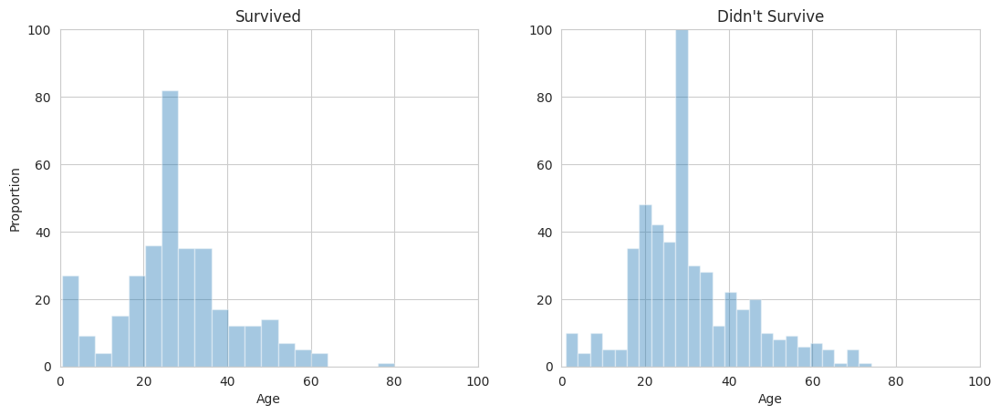

Inicio
PREDICCIÓN DE SUPERVIVIENTES DEL TITANIC
Un caso bastante conocido en Machine Learning
En este caso de estudio, se describe el proceso básico de creación de un modelo de aprendizaje automático, es decir, comprender el problema y los datos, manejar los valores faltantes, realizar ingeniería de características, crear ajustar y optimizar un modelo, así como evaluar el rendimiento del mismo.
Este caso de estudio se basa en el trabajo realizado por Samson Qian en Titanic: Guide with sklearn and EDA, publicado para una competición de Kaggle: Titanic - Machine Learning from Disaster.
Importando librerías necesarias
Lo primero es lo primero: dado que vamos a utilizar numpy, pandas, seaborn, matplotlib y algunos de los paquetes de scikit-learn, necesitamos importarlos. Para esto, tenemos el siguiente bloque de código. Ten en cuenta que también importamos y mostramos lo que hay en la carpeta /content, como sugiere el comentario. Deberíamos ver los conjuntos de datos de entrenamiento y prueba. Este último paso asume que tenemos ambos conjuntos de datos en la carpeta mencionada. Por lo tanto, si deseas seguir y reproducir este notebook, asegúrate de tener acceso a los conjuntos de datos y de que estén en la carpeta /content. Aunque, en realidad, puedes guardarlos en otra carpeta y modificar el código para leer los conjuntos de datos desde esa carpeta, si así lo prefieres. Por cierto, puedes obtener los conjuntos de datos de la competición Titanic - Machine Learning from Disaster.
import numpy as np
import pandas as pd
from sklearn.svm import SVC, LinearSVC
from sklearn.ensemble import RandomForestClassifier
from sklearn.linear_model import LogisticRegression
from sklearn.neighbors import KNeighborsClassifier
from sklearn.naive_bayes import GaussianNB
from sklearn.tree import DecisionTreeClassifier
from sklearn.metrics import make_scorer, accuracy_score
from sklearn.model_selection import GridSearchCV, train_test_split
from sklearn.preprocessing import LabelEncoder, StandardScaler
import seaborn as sns
from matplotlib import pyplot as plt
sns.set_style("whitegrid")
%matplotlib inline
import warnings
warnings.filterwarnings("ignore")
import os
# You should see the training and testing datasets listed below.
print(os.listdir("/content"))
Después de ejecutar el bloque de código anterior, deberías ver los conjuntos de datos listados. Además, ahora tenemos las bibliotecas necesarias para el resto del proceso, así que continuemos.
Cargando y viendo el dataset
Carguemos ambos conjuntos de datos y examinémoslos, comenzando con el conjunto de datos de entrenamiento.
# Read the datasets
training = pd.read_csv("/content/train.csv")
testing = pd.read_csv("/content/test.csv")
# Inspect training dataset
training.head()
Después de ejecutar el código, vemos la siguiente tabla:
| PassengerId | Survived | Pclass | Name | Sex | Age | SibSp | Parch | Ticket | Fare | Cabin | Embarked | |
|---|---|---|---|---|---|---|---|---|---|---|---|---|
| 0 | 1 | 0 | 3 | Braund, Mr. Owen Harris | male | 22.0 | 1 | 0 | A/5 21171 | 7.2500 | NaN | S |
| 1 | 2 | 1 | 1 | Cumings, Mrs. John Bradley (Florence Briggs Th... | female | 38.0 | 1 | 0 | PC 17599 | 71.2833 | C85 | C |
| 2 | 3 | 1 | 3 | Heikkinen, Miss. Laina | female | 26.0 | 0 | 0 | STON/O2. 3101282 | 7.9250 | NaN | S |
| 3 | 4 | 1 | 1 | Futrelle, Mrs. Jacques Heath (Lily May Peel) | female | 35.0 | 1 | 0 | 113803 | 53.1000 | C123 | S |
| 4 | 5 | 0 | 3 | Allen, Mr. William Henry | male | 35.0 | 0 | 0 | 373450 | 8.0500 | NaN | S |
Ahora tenemos una idea del esquema del conjunto de datos de entrenamiento. Observa que con solo echar un vistazo, notamos que la variable objetivo (Survived) parece ser un valor categórico, con posibles valores de 0 o 1. Lo mismo se aplica a Pclass (clase de pasajero), Sex (que es masculino o femenino), entre otros. Pero hay algo más que debería captar nuestra atención de inmediato: esos valores 'NaN' para el predictor Cabin ―parece que tenemos valores faltantes, lo cual es algo que sabemos cómo manejar, y lo haremos en la siguiente sección.
Ahora examinemos el conjunto de datos de prueba:
# Inspect testing dataset
testing.head()
El resultado es el siguiente:
| PassengerId | Pclass | Name | Sex | Age | SibSp | Parch | Ticket | Fare | Cabin | Embarked | |
|---|---|---|---|---|---|---|---|---|---|---|---|
| 0 | 892 | 3 | Kelly, Mr. James | male | 34.5 | 0 | 0 | 330911 | 7.8292 | NaN | Q |
| 1 | 893 | 3 | Wilkes, Mrs. James (Ellen Needs) | female | 47.0 | 1 | 0 | 363272 | 7.0000 | NaN | S |
| 2 | 894 | 2 | Myles, Mr. Thomas Francis | male | 62.0 | 0 | 0 | 240276 | 9.6875 | NaN | Q |
| 3 | 895 | 3 | Wirz, Mr. Albert | male | 27.0 | 0 | 0 | 315154 | 8.6625 | NaN | S |
| 4 | 896 | 3 | Hirvonen, Mrs. Alexander (Helga E Lindqvist) | female | 22.0 | 1 | 1 | 3101298 | 12.2875 | NaN | S |
Notamos que el conjunto de datos de prueba tiene la misma estructura que el conjunto de datos de entrenamiento, simplemente falta la variable objetivo, ya que es el conjunto de pruebas, por supuesto. Echemos un vistazo a cuáles son las características numéricas reales:
# Inspect the numerical features
types_train = training.dtypes
num_values = types_train[(types_train == float)]
print("These are the numerical features:")
print(num_values)
El resultado es el siguiente:
These are the numerical features:
Age float64
Fare float64
dtype: object
Además, podemos verificar algunas otras características del conjunto de datos utilizando la función describe():
training.describe()Esto genera la siguiente tabla:
| PassengerId | Survived | Pclass | Age | SibSp | Parch | Fare | |
|---|---|---|---|---|---|---|---|
| count | 891.000000 | 891.000000 | 891.000000 | 714.000000 | 891.000000 | 891.000000 | 891.000000 |
| mean | 446.000000 | 0.383838 | 2.308642 | 29.699118 | 0.523008 | 0.381594 | 32.204208 |
| std | 257.353842 | 0.486592 | 0.836071 | 14.526497 | 1.102743 | 0.806057 | 49.693429 |
| min | 1.000000 | 0.000000 | 1.000000 | 0.420000 | 0.000000 | 0.000000 | 0.000000 |
| 25% | 223.500000 | 0.000000 | 2.000000 | 20.125000 | 0.000000 | 0.000000 | 7.910400 |
| 50% | 446.000000 | 0.000000 | 3.000000 | 28.000000 | 0.000000 | 0.000000 | 14.454200 |
| 75% | 668.500000 | 1.000000 | 3.000000 | 38.000000 | 1.000000 | 0.000000 | 31.000000 |
| max | 891.000000 | 1.000000 | 3.000000 | 80.000000 | 8.000000 | 6.000000 | 512.329200 |
Por último, podemos echar un vistazo a la cantidad de ejemplos en cada dataset:
# Inspect the amount of examples on each dataset
print("Training examples: {}".format(training.shape[0]))
print("Testing examples: {}".format(testing.shape[0]))
La salida indica que tenemos 891 ejemplos de entrenamiento y 418 ejemplos de prueba, lo que significa que estamos trabajando con una división de aproximadamente 0.68 (68%) para entrenamiento y 0.32 (32%) para pruebas:
Training examples: 891
Testing examples: 418
Ahora que sabemos más sobre el conjunto de datos de entrenamiento y sus características, ocupémonos de los valores faltantes que notamos anteriormente.
Ocupándonos de los valores faltantes
Antes de examinar los valores faltantes, creemos una función de utilidad para imprimir los valores faltantes, ya que seguramente la necesitaremos más adelante.
def null_table(training, testing):
print("Training dataset missing values:\n{}".format(pd.isnull(training).sum()))
print("\nTesting dataset missing values:\n{}".format(pd.isnull(testing).sum()))
Ahora que tenemos esta función, utilicémosla para ver cuántos valores faltantes tiene el conjunto de datos por atributo.
# Inspect amount of missing values
null_table(training, testing)
La salida es la siguiente:
Training dataset missing values:
PassengerId 0
Survived 0
Pclass 0
Name 0
Sex 0
Age 177
SibSp 0
Parch 0
Ticket 0
Fare 0
Cabin 687
Embarked 2
dtype: int64
Testing dataset missing values:
PassengerId 0
Pclass 0
Name 0
Sex 0
Age 86
SibSp 0
Parch 0
Ticket 0
Fare 1
Cabin 327
Embarked 0
dtype: int64
Parece que el dataset de entrenamiento contiene 177 valores faltantes para el atributo 'Age', 687 valores faltantes para 'Cabin' y 2 para 'Embarked', mientras que el conjunto de datos de prueba tiene 86 valores faltantes para 'Age' y 327 para 'Cabin'. En otras palabras, tenemos aproximadamente un ~77% de valores faltantes para 'Cabin' en el conjunto de entrenamiento y ~78% para el mismo atributo en el conjunto de pruebas. Mientras tanto, los 177 valores faltantes de 'Age' en el entrenamiento constituyen aproximadamente un ~20% del dataset, y los 86 faltantes en el conjunto de pruebas también constituyen aproximadamente un ~20% del conjunto de pruebas.
Eliminar los ejemplos que tienen un valor faltante en 'Cabin' o 'Age' no es una opción, ya que estaríamos desperdiciando mucha información. Por otro lado, deshacernos de los 2 ejemplos que tienen un valor faltante en 'Embarked' en el conjunto de entrenamiento es algo que podemos hacer, ya que solo estamos eliminando el 0,2% del conjunto de entrenamiento. El mismo razonamiento se aplica a 'Fare' en el conjunto de pruebas.
Nos desharemos de 'Cabin' debido a sus valores faltantes y de 'Ticket' porque es demasiado ruidoso.
Otra opción aquí para lidiar con los valores faltantes es realizar una imputación en los atributos. Eso es lo que haremos para 'Age' y 'Embarked'. Primero echaremos un vistazo a la moda de 'Embarked', ya que reemplazaremos los valores faltantes con ella.
# Inspect count of each value of 'Embarked'
training.Embarked.value_counts()
Esto genera la salida:
S 644
C 168
Q 77
Name: Embarked, dtype: int64
De los 891 ejemplos del conjunto de entrenamiento, 644 tienen el valor 'S' en 'Embarked', lo que significa que esta es la moda de este atributo. Ahora que sabemos esto, eliminemos los atributos 'Cabin' y 'Ticket' y realicemos la imputación en 'Embarked' reemplazando sus valores faltantes con la moda.
# Drop Cabin and Ticket attributes
training.drop(labels = ["Cabin", "Ticket"], axis = 1, inplace = True)
testing.drop(labels = ["Cabin", "Ticket"], axis = 1, inplace = True)
# Fill 'Embarked' with its mode
training["Embarked"].fillna("S", inplace = True)
# Inspect amount of missing values
null_table(training, testing)
Esto genera la siguiente salida:
Training dataset missing values:
PassengerId 0
Survived 0
Pclass 0
Name 0
Sex 0
Age 177
SibSp 0
Parch 0
Fare 0
Embarked 0
dtype: int64
Testing dataset missing values:
PassengerId 0
Pclass 0
Name 0
Sex 0
Age 86
SibSp 0
Parch 0
Fare 1
Embarked 0
Bien, ahora que los atributos 'Embarked', 'Cabin' y 'Ticket' están bajo control, centrémonos en el atributo 'Age'. De hecho, veamos su distribución.
# Plot distribution of 'Age'
copy = training.copy()
copy.dropna(inplace = True)
sns.distplot(copy["Age"])

Dado que la distribución parece ligeramente sesgada hacia la derecha, podemos reemplazar sus valores faltantes con la mediana. Nota que no estamos interesados en reemplazarlos con la media porque esta última se ve afectada por los valores atípicos.
training.Age.fillna(training.Age.median(), inplace = True)
testing.Age.fillna(testing.Age.median(), inplace = True)
testing.Fare.fillna(testing.Fare.median(), inplace = True)
null_table(training, testing)
El bloque de código anterior genera las tablas de valores faltantes. Échales un vistazo, ya no tenemos valores faltantes; hemos resuelto este problema.
Training dataset missing values:
PassengerId 0
Survived 0
Pclass 0
Name 0
Sex 0
Age 0
SibSp 0
Parch 0
Fare 0
Embarked 0
dtype: int64
Testing dataset missing values:
PassengerId 0
Pclass 0
Name 0
Sex 0
Age 0
SibSp 0
Parch 0
Fare 0
Embarked 0
dtype: int64
Graficando y Visualizando Datos
Ahora que hemos depurado nuestro dataset, analicemos los atributos más relevantes para recopilar información y comprenderlos mejor.
# Plot distribution of survival based on sex
sns.barplot(x="Sex", y="Survived", data=training)
plt.title("Distribution of Survival based on Sex")
plt.show()
total_survived_females = training[training.Sex == "female"]["Survived"].sum()
total_survived_males = training[training.Sex == "male"]["Survived"].sum()
total_survived = total_survived_females + total_survived_males
print("Total people survived: " + str(total_survived))
print("Proportion of Females who survived:")
print(total_survived_females/total_survived)
print("Proportion of Males who survived:")
print(total_survived_males/total_survived)
Esto muestra la distribución de supervivencia basada en el género (Sexo):
Total people survived: 342
Proportion of Females who survived:
0.6812865497076024
Proportion of Males who survived:
0.31871345029239767
Dado que hay una gran diferencia entre las dos proporciones, la edad (Age) parece ser una característica útil para predecir la supervivencia. Ahora echemos un vistazo a 'Pclass'.
# Plot distribution of survival based on passenger class
sns.barplot(x="Pclass", y="Survived", data=training)
plt.ylabel("Survival Rate")
plt.title("Distribution of Survival Based on Class")
plt.show()
total_survived_one = training[training.Pclass == 1]["Survived"].sum()
total_survived_two = training[training.Pclass == 2]["Survived"].sum()
total_survived_three = training[training.Pclass == 3]["Survived"].sum()
total_survived_class = total_survived_one + total_survived_two + total_survived_three
print("Total people survived: " + str(total_survived_class))
print("Proportion of Class 1 Passengers who survived:")
print(total_survived_one/total_survived_class)
print("Proportion of Class 2 Passengers who survived:")
print(total_survived_two/total_survived_class)
print("Proportion of Class 3 Passengers who survived:")
print(total_survived_three/total_survived_class)
Esto genera la siguiente salida:
Total people survived: 342
Proportion of Class 1 Passengers who survived:
0.39766081871345027
Proportion of Class 2 Passengers who survived:
0.2543859649122807
Proportion of Class 3 Passengers who survived:
0.347953216374269Ahora, introduciendo el género (Sexo) como matiz (hue) en el gráfico:
# Plot distribution of survival based on passenger class with Sex as hue
sns.barplot(x="Pclass", y="Survived", hue="Sex", data=training)
plt.ylabel("Survival Rate")
plt.title("Survival Rates Based on Gender and Class")

Y cambiando 'Pclass' y 'Sex' en el gráfico:
# Plot distribution of survival based on Sex with passenger class as hue
sns.barplot(x="Sex", y="Survived", hue="Pclass", data=training)
plt.ylabel("Survival Rate")
plt.title("Survival Rates Based on Gender and Class")
Observando los gráficos de barras, notamos que 'Pclass' también es útil para predecir quiénes sobrevivieron. Las personas en la clase de pasajeros 1 tenían una probabilidad más alta de sobrevivir que las personas en las otras dos clases. Ahora echemos un vistazo a 'Age'.
# Plot survived and not survived proportions based on age
survived_ages = training[training.Survived == 1]["Age"]
not_survived_ages = training[training.Survived == 0]["Age"]
plt.subplot(1, 2, 1)
sns.distplot(survived_ages, kde=False)
plt.axis([0, 100, 0, 100])
plt.title("Survived")
plt.ylabel("Proportion")
plt.subplot(1, 2, 2)
sns.distplot(not_survived_ages, kde=False)
plt.axis([0, 100, 0, 100])
plt.title("Didn't Survive")
plt.subplots_adjust(right=1.7)
plt.show()
sns.stripplot(x="Survived", y="Age", data=training, jitter=True)Parece que los pasajeros en el rango de edades más jóvenes tenían una mayor probabilidad de sobrevivir en comparación con los pasajeros en el rango de edades más avanzadas.
Ingeniería de Características
Ahora, realicemos ingeniería de características para enriquecer los conjuntos de datos originales. Dado que los valores de 'Sex' y 'Embarked' son categóricos, tendremos que transformarlos en valores numéricos antes de alimentarlos a nuestro modelo. Echemos un vistazo primero a sus posibles valores.
print("Possible values for Sex: {}".format(set(training["Sex"])))
print("Possible values for Embarked: {}".format(set(training["Embarked"])))
Possible values for Sex: {'male', 'female'}
Possible values for Embarked: {'Q', 'S', 'C'}
Codifiquemos estos atributos:
le_sex = LabelEncoder()
le_sex.fit(training["Sex"])
encoded_sex_training = le_sex.transform(training["Sex"])
training["Sex"] = encoded_sex_training
encoded_sex_testing = le_sex.transform(testing["Sex"])
testing["Sex"] = encoded_sex_testing
le_embarked = LabelEncoder()
le_embarked.fit(training["Embarked"])
encoded_embarked_training = le_embarked.transform(training["Embarked"])
training["Embarked"] = encoded_embarked_training
encoded_embarked_testing = le_embarked.transform(testing["Embarked"])
testing["Embarked"] = encoded_embarked_testing
Ahora que están codificados, podemos echar un vistazo a sus valores. Para esto, tomamos una muestra de cada dataset.
# Sample training dataset
training.sample(5)
| PassengerId | Survived | Pclass | Name | Sex | Age | SibSp | Parch | Fare | Embarked | |
|---|---|---|---|---|---|---|---|---|---|---|
| 541 | 542 | 0 | 3 | Andersson, Miss. Ingeborg Constanzia | 0 | 9.0 | 4 | 2 | 31.2750 | 2 |
| 546 | 547 | 1 | 2 | Beane, Mrs. Edward (Ethel Clarke) | 0 | 19.0 | 1 | 0 | 26.0000 | 2 |
| 593 | 594 | 0 | 3 | Bourke, Miss. Mary | 0 | 28.0 | 0 | 2 | 7.7500 | 1 |
| 134 | 135 | 0 | 2 | Sobey, Mr. Samuel James Hayden | 1 | 25.0 | 0 | 0 | 13.0000 | 2 |
| 652 | 653 | 0 | 3 | Kalvik, Mr. Johannes Halvorsen | 1 | 21.0 | 0 | 0 | 8.4333 | 2 |
# Sample testing dataset
testing.sample(5)
| PassengerId | Pclass | Name | Sex | Age | SibSp | Parch | Fare | Embarked | |
|---|---|---|---|---|---|---|---|---|---|
| 204 | 1096 | 2 | Andrew, Mr. Frank Thomas | 1 | 25.0 | 0 | 0 | 10.5000 | 2 |
| 264 | 1156 | 2 | Portaluppi, Mr. Emilio Ilario Giuseppe | 1 | 30.0 | 0 | 0 | 12.7375 | 0 |
| 31 | 923 | 2 | Jefferys, Mr. Clifford Thomas | 1 | 24.0 | 2 | 0 | 31.5000 | 2 |
| 203 | 1095 | 2 | Quick, Miss. Winifred Vera | 0 | 8.0 | 1 | 1 | 26.0000 | 2 |
| 216 | 1108 | 3 | Mahon, Miss. Bridget Delia | 0 | 27.0 | 0 | 0 | 7.8792 | 1 |
Ahora procedemos a crear características sintéticas que creemos pueden ayudar a nuestro modelo. Aquí creamos 'FamSize' y 'IsAlone'.
# Create Family Size attribute
training["FamSize"] = training["SibSp"] + training["Parch"] + 1
testing["FamSize"] = testing["SibSp"] + testing["Parch"] + 1
# Create Is Alone attribute
training["IsAlone"] = training.FamSize.apply(lambda x: 1 if x == 1 else 0)
testing["IsAlone"] = testing.FamSize.apply(lambda x: 1 if x == 1 else 0)
Podemos extraer el título de la persona de su nombre, es decir, "Mr. John Doe" > "Mr". Esto podría estar relacionado con la supervivencia del pasajero.
# Create Title attribute
for name in training["Name"]:
training["Title"] = training["Name"].str.extract("([A-Za-z]+)\.",expand=True)
for name in testing["Name"]:
testing["Title"] = testing["Name"].str.extract("([A-Za-z]+)\.",expand=True)
Veamos la frecuencia de cada título.
# Save title set
titles = set(training["Title"])
print(titles)
# Create list of frequency of titles
title_list = list(training["Title"])
frequency_titles = []
for i in titles:
frequency_titles.append(title_list.count(i))
titles = list(titles)
# Create dataframe with titles and their frequency
title_dataframe = pd.DataFrame({
"Titles" : titles,
"Frequency" : frequency_titles
})
# Show title dataframe
print(title_dataframe)
Las frecuencias son las siguientes:
Titles Frequency
0 Ms 1
1 Mr 517
2 Master 40
3 Dr 7
4 Don 1
5 Countess 1
6 Capt 1
7 Miss 182
8 Mrs 125
9 Mlle 2
10 Jonkheer 1
11 Lady 1
12 Rev 6
13 Mme 1
14 Col 2
15 Major 2
16 Sir 1
Ten en cuenta que el título es un valor categórico, por lo que necesitaremos codificarlo, como hicimos con otros atributos anteriormente.
# Encode titles
title_replacements = {"Mlle": "Other", "Major": "Other", "Col": "Other",
"Sir": "Other", "Don": "Other", "Mme": "Other",
"Jonkheer": "Other", "Lady": "Other", "Capt": "Other",
"Countess": "Other", "Ms": "Other", "Dona": "Other"}
training.replace({"Title": title_replacements}, inplace=True)
testing.replace({"Title": title_replacements}, inplace=True)
le_title = LabelEncoder()
le_title.fit(training["Title"])
encoded_title_training = le_title.transform(training["Title"])
training["Title"] = encoded_title_training
encoded_title_testing = le_title.transform(testing["Title"])
testing["Title"] = encoded_title_testing
Ahora que hemos utilizado el atributo 'Name' para obtener los títulos de cada pasajero, podemos eliminar el atributo 'Name', ya que no proporcionará información útil al modelo.
# Drop name attribute
training.drop("Name", axis = 1, inplace = True)
testing.drop("Name", axis = 1, inplace = True)
Por último, tomemos una muestra de nuestros datos para ver los cambios.
# Sample training
training.sample(5)
| PassengerId | Survived | Pclass | Sex | Age | SibSp | Parch | Fare | Embarked | FamSize | IsAlone | Title | |
|---|---|---|---|---|---|---|---|---|---|---|---|---|
| 805 | 806 | 0 | 3 | 1 | 31.0 | 0 | 0 | 7.7750 | 2 | 1 | 1 | 3 |
| 753 | 754 | 0 | 3 | 1 | 23.0 | 0 | 0 | 7.8958 | 2 | 1 | 1 | 3 |
| 814 | 815 | 0 | 3 | 1 | 30.5 | 0 | 0 | 8.0500 | 2 | 1 | 1 | 3 |
| 80 | 81 | 0 | 3 | 1 | 22.0 | 0 | 0 | 9.0000 | 2 | 1 | 1 | 3 |
| 882 | 883 | 0 | 3 | 0 | 22.0 | 0 | 0 | 10.5167 | 2 | 1 | 1 | 2 |
# Sample testing
testing.sample(5)
| PassengerId | Pclass | Sex | Age | SibSp | Parch | Fare | Embarked | FamSize | IsAlone | Title | |
|---|---|---|---|---|---|---|---|---|---|---|---|
| 18 | 910 | 3 | 0 | 27.0 | 1 | 0 | 7.925 | 2 | 2 | 0 | 2 |
| 58 | 950 | 3 | 1 | 27.0 | 1 | 0 | 16.100 | 2 | 2 | 0 | 3 |
| 335 | 1227 | 1 | 1 | 30.0 | 0 | 0 | 26.000 | 2 | 1 | 1 | 3 |
| 102 | 994 | 3 | 1 | 27.0 | 0 | 0 | 7.750 | 1 | 1 | 1 | 3 |
| 91 | 983 | 3 | 1 | 27.0 | 0 | 0 | 7.775 | 2 | 1 | 1 | 3 |
Reescalado de Características
Necesitaremos reescalar los atributos 'Age' y 'Fare' antes de que nuestro modelo los utilice. Para escalarlos, utilizamos un StandardScaler.
scaler = StandardScaler()
ages_train = np.array(training["Age"]).reshape(-1, 1)
fares_train = np.array(training["Fare"]).reshape(-1, 1)
ages_test = np.array(testing["Age"]).reshape(-1, 1)
fares_test = np.array(testing["Fare"]).reshape(-1, 1)
training["Age"] = scaler.fit_transform(ages_train)
training["Fare"] = scaler.fit_transform(fares_train)
testing["Age"] = scaler.fit_transform(ages_test)
testing["Fare"] = scaler.fit_transform(fares_test)
Veamos los efectos del reescalado en los conjuntos de datos.
# Inspect training dataset
training.head()
| PassengerId | Survived | Pclass | Sex | Age | SibSp | Parch | Fare | Embarked | FamSize | IsAlone | Title | |
|---|---|---|---|---|---|---|---|---|---|---|---|---|
| 0 | 1 | 0 | 3 | 1 | -0.565736 | 1 | 0 | -0.502445 | 2 | 2 | 0 | 3 |
| 1 | 2 | 1 | 1 | 0 | 0.663861 | 1 | 0 | 0.786845 | 0 | 2 | 0 | 4 |
| 2 | 3 | 1 | 3 | 0 | -0.258337 | 0 | 0 | -0.488854 | 2 | 1 | 1 | 2 |
| 3 | 4 | 1 | 1 | 0 | 0.433312 | 1 | 0 | 0.420730 | 2 | 2 | 0 | 4 |
| 4 | 5 | 0 | 3 | 1 | 0.433312 | 0 | 0 | -0.486337 | 2 | 1 | 1 | 3 |
# Inspect testing dataset
testing.head()
| PassengerId | Pclass | Sex | Age | SibSp | Parch | Fare | Embarked | FamSize | IsAlone | Title | |
|---|---|---|---|---|---|---|---|---|---|---|---|
| 0 | 892 | 3 | 1 | 0.386231 | 0 | 0 | -0.497413 | 1 | 1 | 1 | 3 |
| 1 | 893 | 3 | 0 | 1.371370 | 1 | 0 | -0.512278 | 2 | 2 | 0 | 4 |
| 2 | 894 | 2 | 1 | 2.553537 | 0 | 0 | -0.464100 | 1 | 1 | 1 | 3 |
| 3 | 895 | 3 | 1 | -0.204852 | 0 | 0 | -0.482475 | 2 | 1 | 1 | 3 |
| 4 | 896 | 3 | 0 | -0.598908 | 1 | 1 | -0.417492 | 2 | 3 | 0 | 4 |
Ajuste del Modelo, Optimización y Predicción
Hemos terminado con el preprocesamiento de datos, así que ahora probamos diferentes modelos y comparamos su rendimiento. Definamos el conjunto de características de entrenamiento, así como la variable objetivo.
X_train = training.drop(labels=["PassengerId", "Survived"], axis=1) # define training features set
y_train = training["Survived"] # define training label set
Crearemos un conjunto de validación para probar la precisión general de nuestro modelo. Utilizaremos una proporción de 0.8 / 0.2.
X_training, X_valid, y_training, y_valid = train_test_split(X_train, y_train,
test_size=0.2,
random_state=0)
Ahora que nuestro conjunto de validación está listo, procedemos a entrenar cada modelo. Por ahora, proporcionaremos los bloques de código necesarios para el entrenamiento, veremos los resultados de precisión de cada modelo en la siguiente sección.
Modelo SVC
# SVC Model
svc_clf = SVC()
parameters_svc = {"kernel": ["rbf", "linear"], "probability": [True, False], "verbose": [True, False]}
grid_svc = GridSearchCV(svc_clf, parameters_svc, scoring=make_scorer(accuracy_score))
grid_svc.fit(X_training, y_training)
svc_clf = grid_svc.best_estimator_
svc_clf.fit(X_training, y_training)
pred_svc = svc_clf.predict(X_valid)
acc_svc = accuracy_score(y_valid, pred_svc)
print("\nThe Score for SVC is: " + str(acc_svc))
Nodelo SVC Lineal
# LinearSVC Model
linsvc_clf = LinearSVC()
parameters_linsvc = {"multi_class": ["ovr", "crammer_singer"], "fit_intercept": [True, False], "max_iter": [100, 500, 1000, 1500]}
grid_linsvc = GridSearchCV(linsvc_clf, parameters_linsvc, scoring=make_scorer(accuracy_score))
grid_linsvc.fit(X_training, y_training)
linsvc_clf = grid_linsvc.best_estimator_
linsvc_clf.fit(X_training, y_training)
pred_linsvc = linsvc_clf.predict(X_valid)
acc_linsvc = accuracy_score(y_valid, pred_linsvc)
print("The Score for LinearSVC is: " + str(acc_linsvc))
Bosque Aleatorio
# RandomForest Model
rf_clf = RandomForestClassifier()
parameters_rf = {"n_estimators": [4, 5, 6, 7, 8, 9, 10, 15], "criterion": ["gini", "entropy"], "max_features": ["auto", "sqrt", "log2"],
"max_depth": [2, 3, 5, 10], "min_samples_split": [2, 3, 5, 10]}
grid_rf = GridSearchCV(rf_clf, parameters_rf, scoring=make_scorer(accuracy_score))
grid_rf.fit(X_training, y_training)
rf_clf = grid_rf.best_estimator_
rf_clf.fit(X_training, y_training)
pred_rf = rf_clf.predict(X_valid)
acc_rf = accuracy_score(y_valid, pred_rf)
print("The Score for Random Forest is: " + str(acc_rf))
Regresión Logística
# LogisiticRegression Model
logreg_clf = LogisticRegression()
parameters_logreg = {"penalty": ["l2"], "fit_intercept": [True, False], "solver": ["newton-cg", "lbfgs", "liblinear", "sag", "saga"],
"max_iter": [50, 100, 200], "warm_start": [True, False]}
grid_logreg = GridSearchCV(logreg_clf, parameters_logreg, scoring=make_scorer(accuracy_score))
grid_logreg.fit(X_training, y_training)
logreg_clf = grid_logreg.best_estimator_
logreg_clf.fit(X_training, y_training)
pred_logreg = logreg_clf.predict(X_valid)
acc_logreg = accuracy_score(y_valid, pred_logreg)
print("The Score for Logistic Regression is: " + str(acc_logreg))
K Vecinos Más Cercanos
# KNeighbors Model
knn_clf = KNeighborsClassifier()
parameters_knn = {"n_neighbors": [3, 5, 10, 15], "weights": ["uniform", "distance"], "algorithm": ["auto", "ball_tree", "kd_tree"],
"leaf_size": [20, 30, 50]}
grid_knn = GridSearchCV(knn_clf, parameters_knn, scoring=make_scorer(accuracy_score))
grid_knn.fit(X_training, y_training)
knn_clf = grid_knn.best_estimator_
knn_clf.fit(X_training, y_training)
pred_knn = knn_clf.predict(X_valid)
acc_knn = accuracy_score(y_valid, pred_knn)
print("The Score for KNeighbors is: " + str(acc_knn))
Naive Bayes Gaussiano
# GaussianNB Model
gnb_clf = GaussianNB()
parameters_gnb = {}
grid_gnb = GridSearchCV(gnb_clf, parameters_gnb, scoring=make_scorer(accuracy_score))
grid_gnb.fit(X_training, y_training)
gnb_clf = grid_gnb.best_estimator_
gnb_clf.fit(X_training, y_training)
pred_gnb = gnb_clf.predict(X_valid)
acc_gnb = accuracy_score(y_valid, pred_gnb)
print("The Score for Gaussian NB is: " + str(acc_gnb))
Árbol de Decisión
# DecisionTree Model
dt_clf = DecisionTreeClassifier()
parameters_dt = {"criterion": ["gini", "entropy"], "splitter": ["best", "random"], "max_features": ["auto", "sqrt", "log2"]}
grid_dt = GridSearchCV(dt_clf, parameters_dt, scoring=make_scorer(accuracy_score))
grid_dt.fit(X_training, y_training)
dt_clf = grid_dt.best_estimator_
dt_clf.fit(X_training, y_training)
pred_dt = dt_clf.predict(X_valid)
acc_dt = accuracy_score(y_valid, pred_dt)
print("The Score for Decision Tree is: " + str(acc_dt))
Extreme Gradient Boosting
# XGBoost Model
from xgboost import XGBClassifier
xg_clf = XGBClassifier()
parameters_xg = {"objective" : ["reg:linear"], "n_estimators" : [5, 10, 15, 20]}
grid_xg = GridSearchCV(xg_clf, parameters_xg, scoring=make_scorer(accuracy_score))
grid_xg.fit(X_training, y_training)
xg_clf = grid_xg.best_estimator_
xg_clf.fit(X_training, y_training)
pred_xg = xg_clf.predict(X_valid)
acc_xg = accuracy_score(y_valid, pred_xg)
print("The Score for XGBoost is: " + str(acc_xg))
Evaluando la Performance de los Modelos Entrenados
Ahora que tenemos el rendimiento de nuestros modelos, podemos compararlos. El siguiente bloque de código imprime una tabla con los modelos y sus rendimientos, en orden descendente.
model_performance = pd.DataFrame({
"Model": ["SVC", "Linear SVC", "Random Forest",
"Logistic Regression", "K Nearest Neighbors", "Gaussian Naive Bayes",
"Decision Tree", "XGBClassifier"],
"Accuracy": [acc_svc, acc_linsvc, acc_rf,
acc_logreg, acc_knn, acc_gnb, acc_dt, acc_xg]
})
model_performance.sort_values(by="Accuracy", ascending=False)
Los resultados obtenidos son los siguientes:
| Model | Accuracy | |
|---|---|---|
| 7 | XGBClassifier | 0.843575 |
| 2 | Random Forest | 0.837989 |
| 0 | SVC | 0.821229 |
| 3 | Logistic Regression | 0.810056 |
| 1 | Linear SVC | 0.782123 |
| 6 | Decision Tree | 0.782123 |
| 5 | Gaussian Naive Bayes | 0.776536 |
| 4 | K Nearest Neighbors | 0.765363 |
Conclusión
Hemos recorrido el proceso de construcción de un modelo de aprendizaje automático e inspeccionado sus resultados utilizando Python y scikit-learn. Comenzamos importando las bibliotecas necesarias, luego cargamos los conjuntos de datos de entrenamiento y prueba y examinamos su estructura. Para sorpresa de nadie, los conjuntos de datos tenían valores faltantes en algunos atributos, por lo que aplicamos técnicas como la imputación y la selección de atributos para lidiar con los valores faltantes. Después de esto, representamos gráficamente algunos datos para visualizarlos y analizarlos en busca de información y comprensión. Luego realizamos la ingeniería de características para crear dos nuevos atributos que creemos podrían ayudar a nuestro modelo: 'FamSize' y 'IsAlone'. Nuestras características numéricas ('Age' y 'Fare') necesitaron un reescalado antes de ser alimentadas a los algoritmos, por lo que después de hacer esto, pasamos por el proceso de entrenar diferentes modelos y como resultado, terminamos con una tabla que muestra cada modelo entrenado y su precisión. A partir de los resultados que obtuvimos, podemos ver que XGBClassifier tuvo una precisión de aproximadamente el 84%, siendo el modelo con la mayor precisión, seguido de Bosque Aleatorio con casi un 84% de precisión también.
Capaz te has dado cuenta de que no hemos utilizado el conjunto de datos de prueba para evaluar los modelos. El conjunto de datos de prueba se puede utilizar para simular un entorno de producción y probar los modelos con él, obteniendo otra medida de precisión en ejemplos nuevos y no vistos anteriormente. Esta es una buena práctica para evaluar cómo se desempeñarán los modelos en situaciones del mundo real.